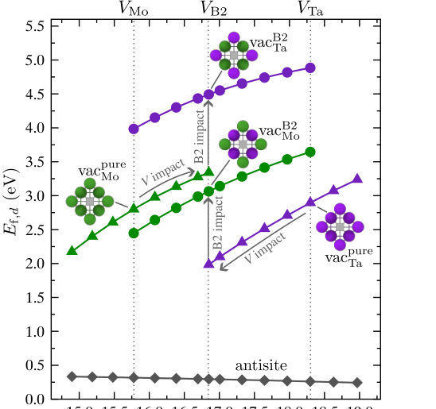
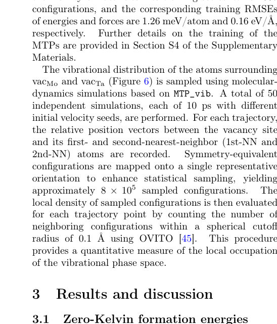
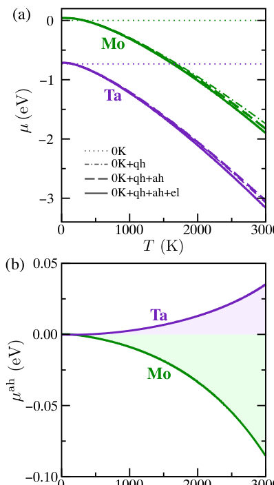

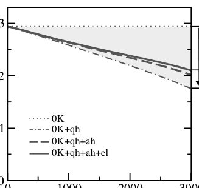
Authors: Qiong Qin, Jie Wu, Congjun Wu
Type: theory · Category: strongly correlated electrons · PDF: https://arxiv.org/pdf/2605.04928v1
Analysis basis: full PDF text, analyzed in chunks
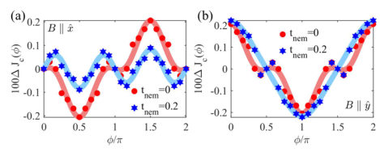
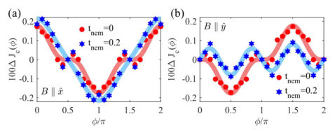
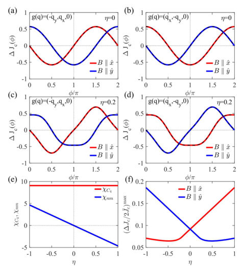
Summary. This paper proposes a new response tensor to characterize the superconducting diode effect. This tensor acts as a powerful diagnostic tool to detect nematicity and identify the underlying symmetry and spin-orbit coupling of a superconducting system.
Why it may be interesting. not directly relevant
Main problem. The paper seeks a fundamental descriptor to characterize the non-reciprocal critical current response in the superconducting diode effect and to use this descriptor to identify symmetry-breaking orders like nematicity.
Main result. The authors propose a response tensor that relates the dipole component of the critical current angular distribution to an applied magnetic field, showing that its symmetry (antisymmetric vs. symmetric) reveals the presence of nematicity and the type of spin-orbit coupling.
Method. The study employs a mean-field Bogoliubov-de Gennes (BdG) formalism, Ginzburg-Landau analysis, and group theory to analyze the symmetry properties of the response tensor.
Model / system. The model consists of 2D superconducting systems with Rashba or Dresselhaus spin-orbit coupling, an in-plane magnetic field, and a nematic hopping term that breaks rotational symmetry.
Key observables. Response tensor (chi), non-reciprocal critical current (delta Jc), dipole vector (D), and nematicity strength (eta).
Important parameters / regimes. Rashba and Dresselhaus coupling strengths, in-plane magnetic field (B), hopping amplitude (t), and chemical potential (mu).
Assumptions / limitations. The analysis assumes a momentum-independent pairing potential and focuses on specific point group symmetries (C3v, C4v, C6v, D2d).
Paper structure. The paper introduces the response tensor, defines the physical model and Hamiltonian, performs symmetry analysis for different spin-orbit coupling types, investigates the effect of nematicity, and concludes with the tensor's utility as a diagnostic tool.
We propose a response tensor $\mathbf{\hat χ}$ to characterize the non-reciprocal critical current response of the superconducting (Josephson) diode effect. It describes the coupling between the dipole component of the angular distribution of the critical current and the applied magnetic field -- an analogue to the Hall response in the normal state. In quasi-2D systems with Rashba spin-orbit coupling and point group symmetries $C_{3v}$, $C_{4v}$ or $C_{6v}$, this tensor takes a fully antisymmetric form. When nematicity is present, a symmetric contribution emerges, providing an indicator of the nematic order in the superconducting state. In contrast, for systems exhibiting Dresselhaus spin-orbit coupling with the $D_{2d}$ symmetry, the tensor becomes diagonal traceless, and nematicity brings in a trace part. Our analysis not only accounts for the superconducting diode effect under external applied or intrinsic effective magnetic fields, but also predicts the symmetry conditions for realizing the diode effect when the magnetic field is aligned with the current. Beyond this, the proposed tensor provides a promising tool for detecting nematicity and potential nematic transitions deep within the superconducting phase. It may also encode additional information about the underlying electronic structure and symmetry-breaking orders, warranting further experimental investigation.
Authors: Waseem Akbar, Michał Zegrodnik
Type: theory · Category: strongly correlated electrons · PDF: https://arxiv.org/pdf/2605.04693v1
Analysis basis: full PDF text, analyzed in chunks
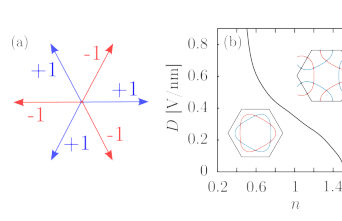
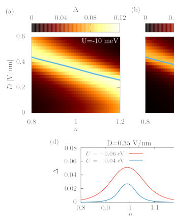
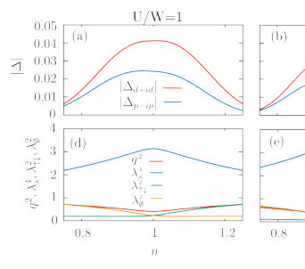
Summary. This paper compares two theoretical models to explain superconductivity in twisted WSe2 bilayers. It finds that a strongly correlated t-J-U model, which predicts an exotic mixed-symmetry superconducting state, is more consistent with experimental observations than a conventional s-wave model. The results highlight how kinetic exchange and correlation-induced renormalization drive the stability of the superconducting phase.
Why it may be interesting. not directly relevant
Main problem. The study aims to determine the origin and nature of superconductivity in twisted WSe2 bilayers by comparing two different theoretical frameworks.
Main result. The t-J-U model predicts an exotic, topologically non-trivial mixed d+id/p-ip symmetry state that aligns better with experimental observations of superconductivity near half-filling than the conventional s-wave prediction of the negative U-Hubbard model.
Method. The authors use the Hartree-Fock and Bogoliubov-de Gennes (BdG) approach for the negative U-Hubbard model, and the Gutzwiller approximation method to account for correlation-induced renormalization in the t-J-U model.
Model / system. The physical system is twisted WSe2 (tWSe2) moiré transition metal dichalcogenide bilayers, modeled using a single moiré band on a triangular lattice with Ising-type spin-orbit coupling, specifically via the negative U-Hubbard and t-J-U models.
Key observables. Superconducting gap symmetry (s-wave vs. mixed d+id/p-ip), Chern number, superconducting gap amplitude, and density of states at the Fermi level.
Important parameters / regimes. Twist angle, band filling (n), displacement field (D), onsite Coulomb repulsion (U), kinetic exchange (J), and bandwidth (W).
Assumptions / limitations. The study assumes the validity of the Gutzwiller approximation in infinite dimensions and focuses on a single moiré band approximation.
Figures summary. Figure 1 shows a schematic of direction-dependent factors on a triangular lattice, the evolution of the Van Hove singularity in the (n, D) plane, and the density of states as a function of band filling.
Paper structure. The paper introduces the problem of superconductivity in tWSe2, describes the two theoretical models (negative U-Hubbard and t-J-U), presents the results of each approach regarding gap symmetry and stability, compares them against experimental data, and discusses the impact of intersite repulsion.
Superconductivity has recently been observed in moiré transition-metal dichalcogenide bilayers. Here, we investigate the superconducting state in twisted WSe$_2$ using two complementary theoretical approaches. The first is based on the negative $U$-Hubbard model and represents a relatively conventional pairing scenario, in which strong electron-electron repulsion does not directly affect the paired state and an isotropic $s$-$wave$ gap emerges. The second approach employs the $t$-$J$-$U$ model, allowing for unconventional gap symmetries and incorporating strong correlation effects via substantial renormalization induced by Coulomb repulsion. We compare the key properties of the superconducting states obtained within these two frameworks and discuss their implications in light of available experimental observations.
Authors: Xiang Xu, Fritz Körmann, Sergiy Divinski, Blazej Grabowski, Xi Zhang
Type: theory · Category: statistical mechanics · PDF: https://arxiv.org/pdf/2605.04969v1
Analysis basis: full PDF text, analyzed in chunks




Summary. This paper uses ab initio methods and machine learning potentials to calculate the temperature-dependent formation energies of point defects in B2 MoTa up to 3000 K. It reveals that the energy reduction for Ta-site vacancies is nearly double that of Mo-site vacancies due to a combination of chemical-potential shifts and enhanced local anharmonic vibrations. This work provides a detailed thermodynamic map of defect evolution in refractory alloys at extreme temperatures.
Why it may be interesting. not directly relevant
Main problem. Quantifying the temperature dependence of Gibbs energies of formation for vacancies and antisites in B2 MoTa, specifically identifying the physical origins of sublattice asymmetry at high temperatures.
Main result. The study finds a pronounced sublattice asymmetry in vacancy formation energy reduction, where Ta-site vacancies decrease by 2.1 eV compared to 1.1 eV for Mo-site vacancies, driven by both quasiharmonic chemical-potential imbalances and anharmonic local vibrational responses.
Method. Ab initio DFT calculations combined with machine-learning-based Moment Tensor Potentials (MTP) for thermodynamic integration, free-energy perturbation, and molecular dynamics to capture anharmonic and electronic contributions.
Model / system. The B2-structured MoTa intermetallic alloy, treated as a two-sublattice system, studied up to 3000 K.
Key observables. Gibbs energies of formation (Gf), entropy of formation (Sf), chemical potentials (mu), vacancy and antisite concentrations, and vibrational distributions.
Important parameters / regimes. Temperatures up to 3000 K, stoichiometric B2 composition, and the dilute-solution approximation.
Assumptions / limitations. The calculations assume a dilute-solution approximation for defect concentrations and focus on the stoichiometric composition.
Figures summary. Figure 1 shows 0 K formation energies vs. volume; Figure 2 shows chemical potentials and thermal contributions; Figure 3 shows antisite Gibbs energy trends; Figure 4 shows vacancy formation energetics; Figure 5 shows thermal decomposition of asymmetry; Figure 6 shows 3D vibrational distributions.
Paper structure. The paper introduces the problem of high-temperature defect energetics, describes the DFT and MTP methodology, presents 0 K energetics, details the temperature-dependent decomposition of Gibbs energies (including quasiharmonic, anharmonic, and electronic parts), and concludes with a microscopic analysis of the sublattice asymmetry.
Using B2 MoTa, the strongest B2 former among group V/VI refractory binaries, as a model system, we compute temperature-dependent Gibbs energies of formation of vacancies and antisites from ab initio calculations up to 3000 K at the stoichiometric composition. We explicitly account for thermal electronic excitations, vibrational anharmonicity, and electron-vibration coupling. The key finding is that the temperature dependence of the Gibbs energies of vacancy formation exhibits a pronounced sublattice asymmetry. Specifically, the Gibbs energy of formation of a Mo-site vacancy decreases by 1.1 eV from 0 to 3000 K, whereas the decrease for a Ta-site vacancy amounts to 2.1 eV, almost a factor of two larger. Two contributions of distinct origin govern the temperature dependence of this asymmetry: a quasiharmonic contribution associated with the chemical-potential imbalance set by the two antisite structures and an anharmonic contribution associated with the local vibrational response of the vacancy structures. The asymmetry in anharmonic vibrations is traced back to an enlarged local vibrational distribution of the first-nearest neighbors around the Ta-site vacancy. In contrast to the vacancies, the Gibbs energies of antisite formation vary only weakly with temperature.
Authors: Zheng Zhong, Ziqi Cui, Yu Zhuo, Tianyu Yu, Jianfeng Cai, Kaibo Zou, Jiacheng Shen, Bowen Huang, Zhuoming Xie, Huiqiu Deng, Yang Yu, Hao Zhang, Wangyu Hu, Tengfei Yang, Jie Hou
Type: both · Category: statistical mechanics · PDF: https://arxiv.org/pdf/2605.04420v1
Analysis basis: full PDF text, analyzed in chunks
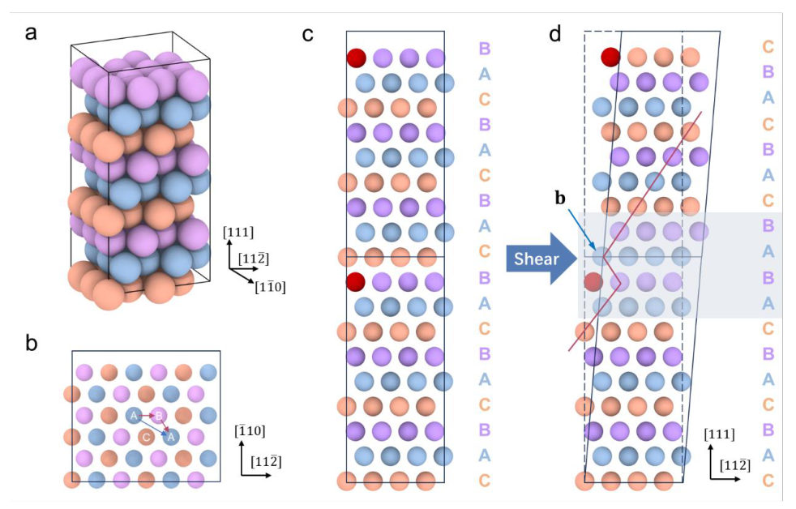
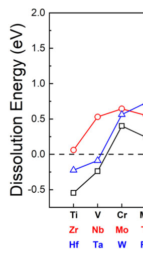
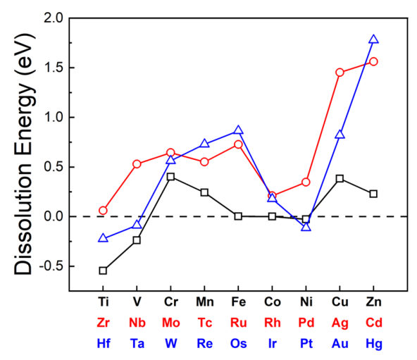
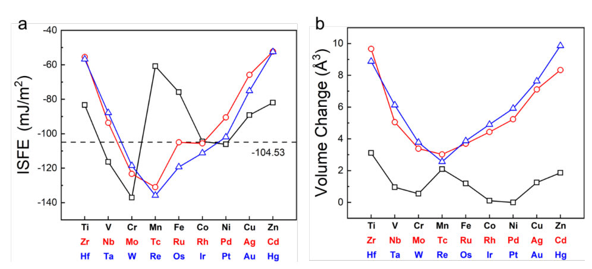
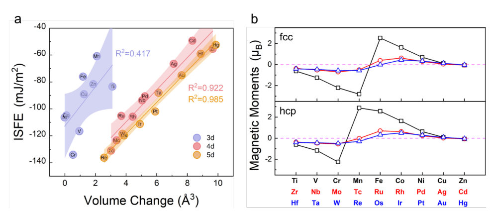
Summary. This paper provides a comprehensive thermodynamic framework to predict how alloying elements regulate stacking fault energy and phase stability in cobalt alloys. By combining DFT-based free energy calculations with experimental TEM analysis, it clarifies the roles of atomic size and magnetism in driving structural transitions. This work is crucial for the design of high-performance Co-based materials like cemented carbides.
Why it may be interesting. not directly relevant
Main problem. The lack of a quantitative assessment of how alloying elements affect stacking fault energy (SFE) and phase stability in Co-based alloys at finite temperatures.
Main result. The study establishes that 0K SFE is driven by atomic misfit volume for 4d/5d elements but deviates for 3d elements due to magnetic effects, and provides a thermodynamic model that accurately predicts the fcc-hcp transformation temperature.
Method. Integrated approach using first-principles DFT (including phonon, electronic, and magnetic free-energy contributions) combined with TEM/EDS microstructural characterization.
Model / system. Cobalt (Co) and Co-based alloys (including WC-Co carbides) focusing on the fcc to hcp phase transformation and the effect of transition metal solutes.
Key observables. Intrinsic Stacking Fault Energy (ISFE), phase transformation temperature (T_trans), atomic misfit volume, and dislocation dissociation width.
Important parameters / regimes. 0K vs. finite temperature regimes, 3d/4d/5d transition metal solutes, and magnetic/vibrational free-energy contributions.
Assumptions / limitations. The use of the ANNNI model to approximate ISFE; longitudinal spin fluctuations were treated using pure Co values to reduce cost; the interpretation of deformation mechanisms is a physically motivated extrapolation.
Figures summary. Figure 1 shows atomistic models of dislocation dissociation and stacking sequences; Figure 2 shows dissolution energies; Figure 3 correlates ISFE with misfit volume; Figure 6 shows the decomposition of free energy components; Figure 8 shows TEM images of Co phases in carbides.
Paper structure. Introduction of the SFE problem, computational methodology (DFT and thermodynamic framework), results of 0K energetics and solute trends, finite-temperature phase stability analysis, experimental validation using WC-Co carbides, and discussion of deformation mechanisms.
Stacking fault energy dictates phase stability and deformation behavior in Co alloys and WC-Co cemented carbides, yet a quantitative assessment of alloying effects at finite temperatures remains poorly established. By integrating first-principles thermodynamics with microstructural characterization, we provide a rigorous evaluation of these influences across atomic and macroscopic scales. We show that stacking fault energetics at 0K for transition metal solutes are primarily governed by atomic misfit volume. While 4d and 5d elements follow a consistent linear trend, specific 3d solutes exhibit significant deviations due to non-negligible magnetic contributions. By incorporating phonon, electronic, longitudinal spin-fluctuation, and magnetic free-energy contributions, the model accurately captures the fcc-hcp transformation and quantifies how diverse solutes modulate the phase landscape. We demonstrate that V, Ni, Fe, Mo, and W lower the transformation temperature by stabilizing fcc phase, while Cr and C exhibit the opposite effect, consistent with experimental phase diagrams. Furthermore, microscopic analysis confirms that higher W content dissolved in the Co suppresses stacking-fault formation by elevating the stacking fault energy at finite temperatures. This work clarifies the physical mechanisms by which alloying regulates stacking fault energy and phase stability in Co-based systems, providing guidance for the design of Co-based alloys and WC-Co cemented carbides.
Authors: Cole Franz, Michael B. Prime, Jeffrey Bunn, Andrew Payzant, Katharine Page
Type: experiment · Category: other · PDF: https://arxiv.org/pdf/2605.05006v1
Analysis basis: full PDF text, analyzed in chunks
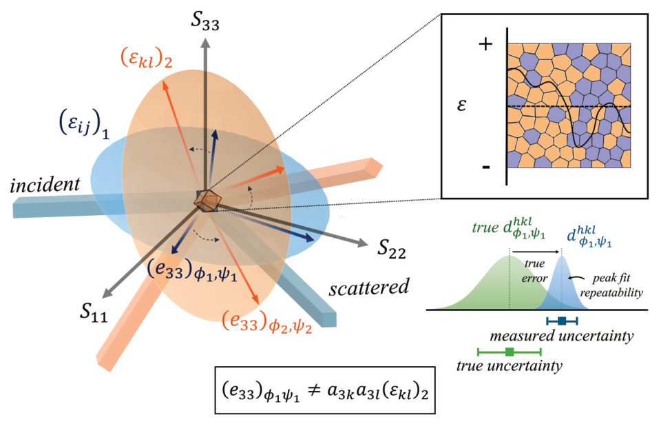
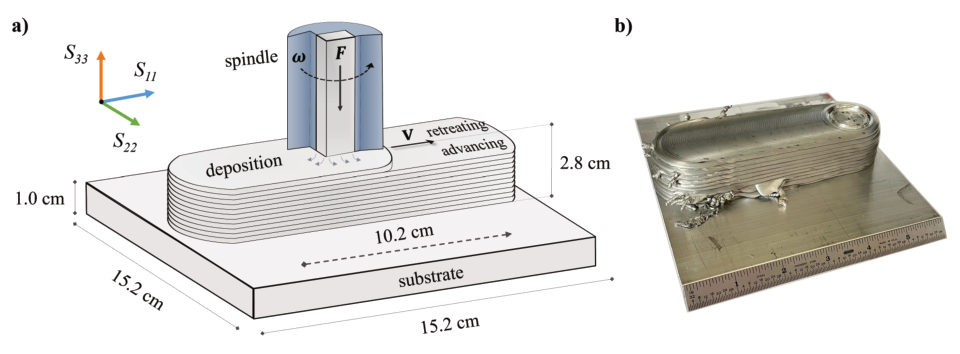
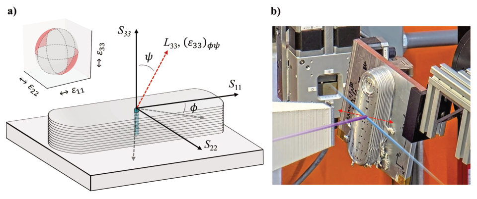

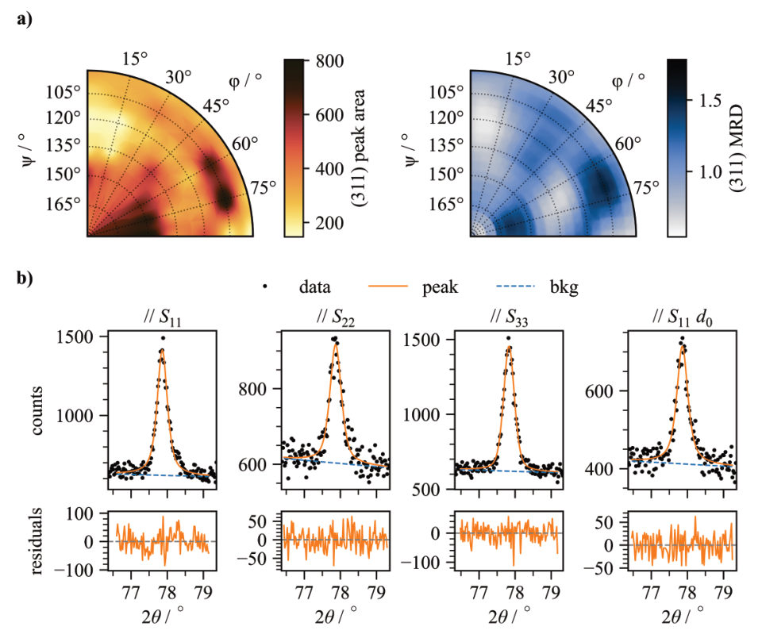
Summary. This paper investigates why standard error propagation in neutron diffraction underestimates the true scatter of residual strain measurements in heterogeneous materials. The authors demonstrate that microstructural gradients cause a hidden bias and suggest that measurement uncertainties should be inflated to accurately reflect the physical variability of the strain field.
Why it may be interesting. not directly relevant
Main problem. Standard uncertainty propagation in neutron diffraction fails to capture the true experimental scatter of residual strain measurements in materials with high microstructural heterogeneity.
Main result. The study finds that least-squares estimation significantly underestimates true uncertainty due to sub-sampling of strain gradients, and proposes inflating uncertainties by a scale factor to restore physical consistency with the strain transformation law.
Method. Comparison of three calculation pathways (3-measurement, 6-measurement, and 36-measurement least-squares) using neutron diffraction on an additive manufacturing component, validated via statistical tests and the strain transformation law.
Model / system. An additive friction-stir deposition (AFSD) component made of AA6061-T6 aluminum alloy, characterized by fine-scale gradients (~200 um) of plastic strain, texture, and residual elastic strain.
Key observables. Lattice strain components, stress tensor components, diffraction peak positions, interplanar spacing (d311), peak area, and integral breadth.
Important parameters / regimes. Fine-scale gradients of ~200 um, measurement uncertainty of 50-100 microepsilon, and uncertainty inflation factors ranging from 1.53 to 2.67.
Assumptions / limitations. Assumes peak-fit uncertainties represent measurement precision but not physical variability; assumes isotropic elastic behavior and that the strain transformation law serves as a valid physical constraint.
Figures summary. Schematics of strain sampling and AFSD process; diagrams of experimental setup; plots of sin^2psi behavior, peak fits, and kernel density estimates of residuals showing the effect of uncertainty inflation.
Paper structure. Introduction of the uncertainty problem; description of the AFSD aluminum sample and neutron diffraction setup; comparison of three mathematical reconstruction methods; statistical evaluation of error propagation and bias; proposal of an uncertainty inflation method; conclusion.
When calculating residual strain via neutron or X-ray diffraction, uncertainties propagated from the peak fit are often inadequate to describe the true scatter of measurements about a singular strain state, such as one that should describe a macroscopic continuum. Because diffraction is inherently a selective process, orientation dependent scatter arises from the sub-sampling of strong microstructure and strain gradients. This paper investigates the appropriateness of propagated uncertainties with reference to their original intention, i.e., noise about a mean value. Thirty-six unique orientations of strain measurements are taken at multiple locations within an additive friction-stir deposition component with fine-scale gradients (~200 um) of plastic strain, texture, and residual elastic strain. Multiple strain and stress calculation pathways are compared: direct substitution of three measurements into Hooke's law, direct inversion of any six unique orientations into the strain state tensor, and thirty-six measurement least-squares estimation. For the latter two cases, the appropriateness of the uncertainty interval is statistically evaluated based on a physical constraint: common agreement under the strain transformation law. For this sample, the direct inversion of six measurements retains a conservative estimate of the uncertainty. However, propagated uncertainties in the least-squares solution greatly underestimate the true experimental scatter. A simple pathway to estimate appropriate uncertainty intervals is suggested. These results demonstrate that interpretation of uncertainty in residual strain is strongly dependent on intrinsic, sample-dependent effects, and that oversampling orientations and statistical analysis can give more accurate results with realistic uncertainties.
Authors: Irwan Saleh Kurniawan, Russel Cruz Sevilla, Ruth Jeane Soebroto, Hsiu-Ying Huang, Hsiu-Ming Hsu, Ji-Lin Shen, Sheng Hsiung Chang, Wen-Chung Li, Chi-Tsu Yuan
Type: experiment · Category: other · PDF: https://arxiv.org/pdf/2605.04865v1
Analysis basis: full PDF text, analyzed in chunks
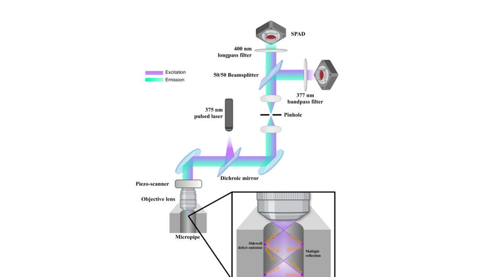
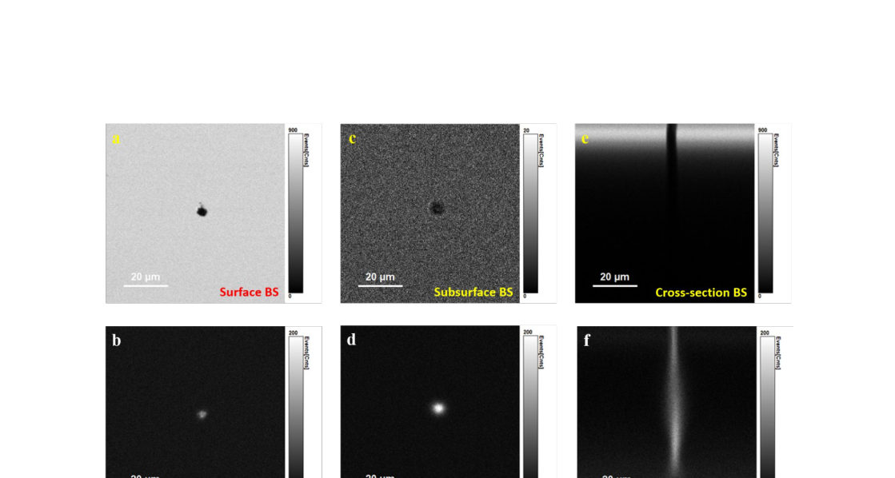
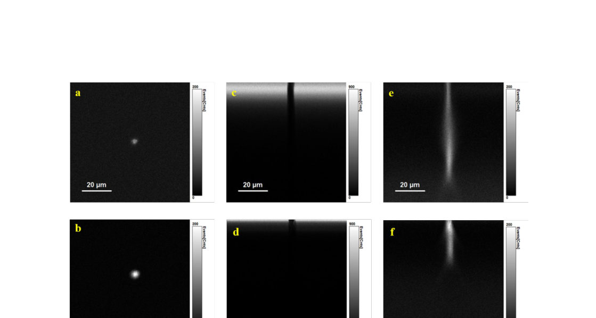
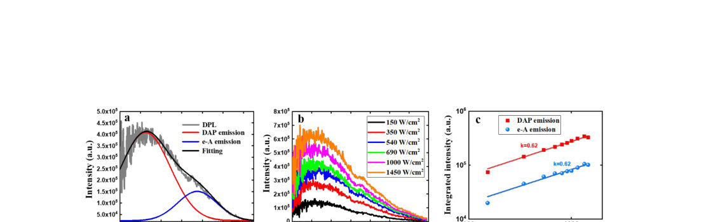
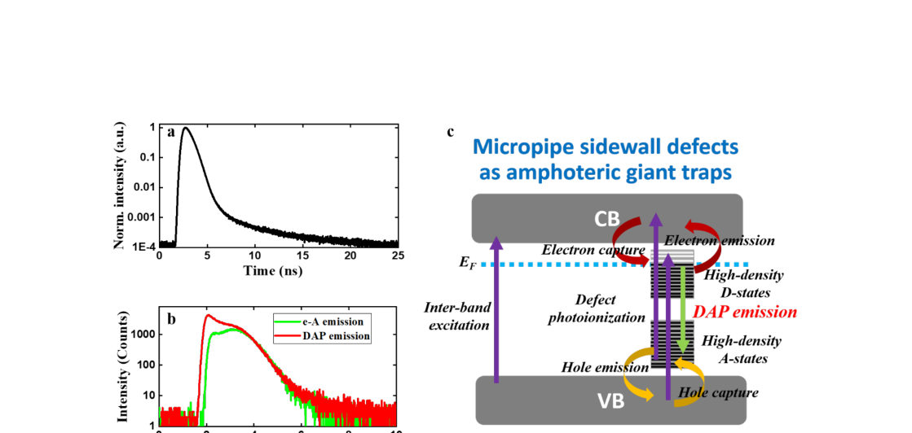
Summary. Researchers developed a non-line-of-sight optical technique to probe the otherwise inaccessible internal surfaces of SiC micropipes. They discovered that these sidewalls contain a high density of both donor and acceptor deep-level states that act as large-scale traps, providing a pathway for leakage current in power devices.
Why it may be interesting. not directly relevant
Main problem. The difficulty of probing the electronic nature and leakage mechanisms of high-aspect-ratio SiC micropipe sidewalls due to their inaccessible hollow-core geometry.
Main result. The development of a non-line-of-sight technique revealed that micropipe sidewalls act as 'amphoteric giant traps' with high densities of donor and acceptor states that facilitate leakage current.
Method. Non-line-of-sight (NLOS) confocal multiple-reflection spectromicroscopy combined with direct defect photoionization and time-resolved photoluminescence.
Model / system. The physical system is 4H-SiC epitaxial wafers containing micropipes (hollow-core screw dislocations) with high-density defect states on their internal sidewalls.
Key observables. Backscattering (BS) intensity, defect photoluminescence (DPL) spectra, power-dependent emission intensity, and nanosecond-scale decay dynamics.
Important parameters / regimes. Excitation wavelength of 375 nm, numerical apertures of 0.4 and 0.65, and power-law exponent of approximately 0.62 for emission intensity.
Assumptions / limitations. The 375 nm excitation primarily targets the sidewalls rather than the bulk, and Gaussian fitting is a valid method for quantifying spectral components.
Figures summary. Fig 1 shows the NLOS experimental setup; Fig 2 compares surface and cross-sectional BS/DPL maps; Fig 3 shows the effect of objective NA on mapping; Fig 4 presents power-dependent DPL spectra and power-law analysis; Fig 5 illustrates the energy band diagram and decay kinetics.
Paper structure. Introduction to SiC micropipe defects, description of the NLOS confocal spectromicroscopy setup, validation of the technique via mapping, detailed spectroscopic and time-resolved analysis of sidewall defects, and a discussion linking defect physics to device leakage.
Micropipes are among the most detrimental defects in SiC wafer and are closely linked to catastrophic device failure. However, the microscopic defect nature of their internal sidewalls and the mechanism of the associated leakage current remain poorly understood, because their high-aspect-ratio geometry severely restricts direct optical probing. Here, we develop a non-line-of-sight confocal multiple-reflection spectromicroscopy technique combined with direct defect photoionization to unravel the defect physics of micropipe sidewalls. We show that these sidewalls host a high density of donor-like and acceptor-like deep-level states, giving rise to ultrabroad emission bands composed of intrinsic DAP-like recombination and detrapping-mediated free-to-bound transitions. Unlike conventional defect luminescence, the DAP-like emission remains dominant even at room temperature across all excitation powers. This behavior is attributed to rapid carrier capture by the sidewall defects, as evidenced by fast-rising and nanosecond-scale decay dynamics, along with coupled carrier kinetics. These results suggest that micropipe sidewalls can serve as extended amphoteric giant traps and carrier reservoirs, facilitating leakage current through trap-assisted transport. Our work provides a nondestructive optical approach for directly probing high-aspect-ratio extended defects and offers deep mechanistic insight into their defect physics and leakage mechanisms.
Authors: Hao Chen, Valery I. Levitas, Tengyi Liu, Jingyu Lu, Rui Zhu, Zhongqiang Zhang
Type: theory · Category: disordered systems and neural networks · PDF: https://arxiv.org/pdf/2605.04521v1
Analysis basis: full PDF text, analyzed in chunks
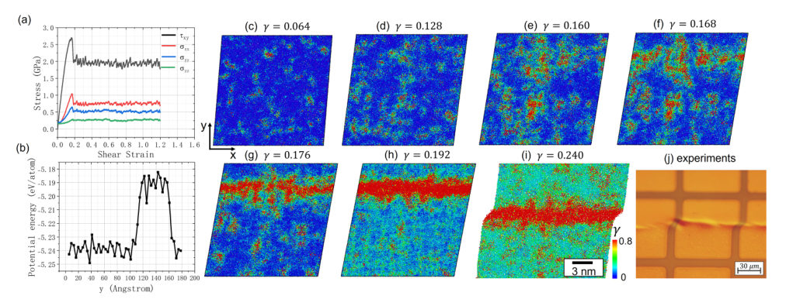
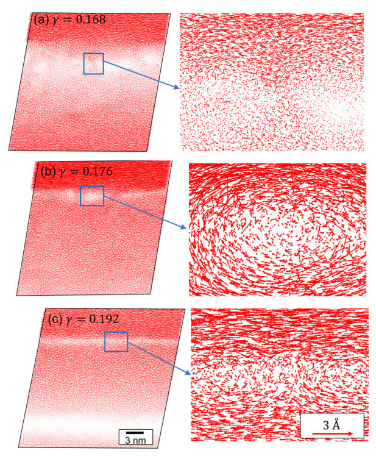
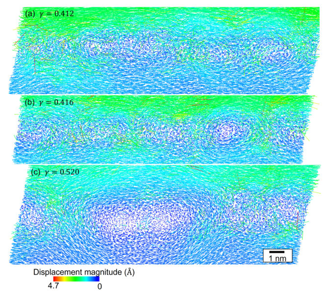

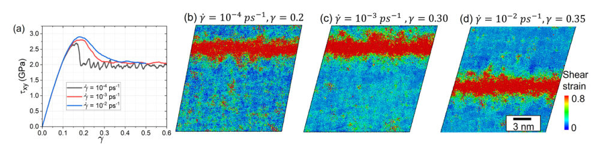
Summary. This paper investigates how mechanical shear influences the phase transformation between low-density and high-density amorphous silicon under pressure. Using machine-learning-based molecular dynamics, the authors show that shear can trigger phase changes at much lower pressures than hydrostatic loading and uncover a unique turbulent-like flow within shear bands. These findings provide insight into the plasticity and stability of amorphous materials under extreme conditions.
Why it may be interesting. not directly relevant
Main problem. Understanding the atomistic mechanisms and kinetics of shear-induced phase transformations (LDA to HDA) and shear band formation in amorphous silicon under high pressure.
Main result. The study reveals that shear reduces the pressure required for phase transitions and that a 'turbulent-like' flow within shear bands promotes the reverse phase transformation, leading to a drop in HDA fraction. It also identifies transformation-induced plasticity (TRIP) as a mechanism for stress relaxation.
Method. Large-scale molecular dynamics simulations using the Gaussian Approximation Potential (GAP) combined with a new mechanism-based analytical kinetic model based on accumulated plastic strain.
Model / system. The physical system is amorphous silicon (a-Si) under high hydrostatic pressure and shear deformation, involving transitions between low-density amorphous (LDA) and high-density amorphous (HDA) phases.
Key observables. Stress-strain curves, HDA atomic fraction, atomic coordination numbers, non-affine squared displacements, and displacement vector fields.
Important parameters / regimes. Hydrostatic pressure (1–9.8 GPa), shear strain, shear strain rate, and yield strength ratios between phases.
Assumptions / limitations. The analytical model assumes that the number of Shear Transformation Zones (STZs) scales with plastic strain and that the elastic strain can be approximated by the ratio of shear stress to the shear modulus.
Figures summary. Figure 1 shows the shear band formation process and stress-strain curves; Figure 2 displays atomic displacement vector fields evolving into rotational flows; Figure 3 maps the internal structure and reduction of swirls in shear bands; Figure 4 shows stress-strain curves at different strain rates.
Paper structure. The paper introduces the problem of strain-induced phase transitions, describes the MD simulation setup and GAP potential, presents the development of an analytical kinetic model, details the results regarding phase transformation kinetics and shear band dynamics, and concludes with physical implications and applications.
Large-scale molecular dynamics simulations of shear deformation under constant pressures of amorphous silicon, PT from low-density-amorphous (LDA) to high-density-amorphous (HDA) Si, and formation of shear bands (SBs) are performed using the state-of-the-art Gaussian Approximation Potential. The simulations reveal that LDA$\leftrightarrow$HDA shear-induced PTs occur simultaneously until reaching steady state. The developed mechanism-based analytical model well describes shear-strain-governed kinetics and steady states at all pressures, independent of shear stresses. Shear reduces the pressure for initiation and completion of LDA$\rightarrow$HDA PT by $4.36$ and $5.10$ GPa, respectively. Without PT at low pressure, shear-banding occurs, which is partially suppressed by PT at higher pressure with uniform deformation-PT at $9.8$ GPa. Despite the much larger shear and expected fraction of HDA, surprising sharp drop in the HDA atomic fraction within the SB was discovered. In bulk, Si deforms by atomic rearrangement in localized shear transformation zones with high nonaffine displacements, which trigger nucleation of HDA clusters within LDA and, concurrently, of LDA clusters within HDA, without growth and coalescence. In SB, a turbulent-like flow with swirls is revealed, which promotes reverse PT from HDA$\rightarrow$LDA more effectively. Transformation-induced plasticity in amorphous Si is revealed. The findings open up basic research into the mechanisms and kinetics of plastic strain-induced PTs in amorphous materials under high pressure, with numerous important applications.